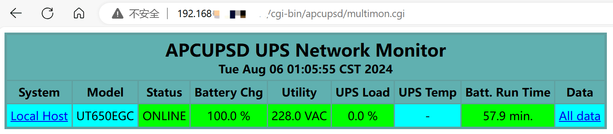
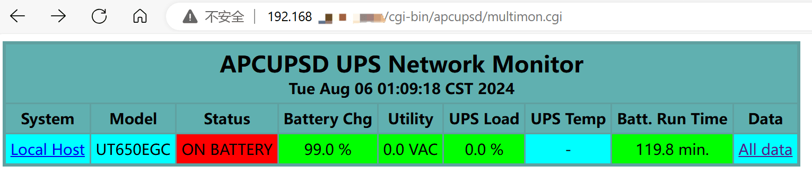

NAS（4）—— UPS 不断电系统
UPS
笔者可以很负责任地说：如果你组建的 NAS 有数据存储需求，那么一定需要一同配备一台 UPS（Uninterruptible Power Supply，不间断电源）。在遇到突发情况导致断电时，UPS 可以保证继续维持一段时间的稳定供电。此时，UPS 可以通过 USB 连接等方式向 NAS 发送低电量（离电）信号，NAS 在接收到这个信号后进行自动关机，从而保护其中的数据。
关于 UPS 选购的部分，本文不作说明，满足以下要求即可：
- 保证在突然断电时能够维持一段时间的稳定供电
- 保证处于供电状态时能够向机器发送信号
停电告警
通过 USB 连接到 UPS
一般在购买时 UPS 会随机器附赠一条 USB Type-B 线，将其与 NAS 连接起来即可。
将 NAS 的电源插头插到 UPS 上，在终端中输入如下命令：
1 | lsusb |
以查看连接到 NAS 的 USB 设备。结果如下所示：
1 | Bus 002 Device 001: ID 1d6b:0003 Linux Foundation 3.0 root hub |
确保当中有你的 UPS 设备。如果没有，请检查 USB 线连接情况。
apcupsd
apcupsd 是个跨平台的开源 APC UPS 管理工具。它由社区爱好者维护开发，同时也收到了 APC 官方的强力支持。
当然，你也可以使用NUT（Network UPS Tools）来管理 UPS 设备，但它与 apcupsd 互斥。
安装
使用以下命令安装 apcupsd：
1 | sudo apt install apcupsd |
配置
编辑/etc/apcupsd/apcupsd.conf配置文件：
1 | sudo vim /etc/apcupsd/apcupsd.conf |
需要修改以下内容：
1 | UPSNAME <你给 UPS 的名字> |
编辑/etc/default/apcupsd文件：
1 | sudo vim /etc/apcupsd/apcupsd |
修改以下内容：
1 | ISCONFIGURED=yes |
运行如下命令以检查 UPS 连接情况：
1 | sudo apcaccess status |
如果结果中STATUS项为 ONLINE，则说明成功连接；如果为 COMMLOST，请检查 USB 线连接情况，或将/etc/apcupsd/apcupsd.conf配置文件中的 UPSCABLE项改为 smart。
启动 apcupsd 服务：
1 | sudo systemctl enable apcupsd |
Web 服务
apcupsd 在运行时，默认设置会在本地的 3551 端口启动一个 CGI 程序，我们可以通过 Apache2 来建立一个服务器，在网页端查看 UPS 状态。
安装 apcupsd-cgi：
1 | sudo apt install apcupsd-cgi |
安装 Apache2：
1 | sudo apt install apache2 |
启用 Apache2 的 CGI 模块：
1 | sudo a2enmod cgid |
修改 Apache2 的监听端口，编辑/etc/apache2/ports.conf文件：
1 | sudo vim /etc/apache2/ports.conf |
将 Listen 80改为你需要的端口，并记得在 Cockpit 的防火墙设置中放行这个端口。
启动 Apache2 服务：
1 | sudo systemctl enable apache2 |
访问这个地址：http://<NAS IP 地址>:<Apache2 端口>/cgi-bin/apcupsd/multimon.cgi，成功看到 UPS 管理页面。


断电时休眠而不是直接关机
以下内容来自 Arch Wiki，未经过笔者测试。
创建休眠脚本
以 root 身份创建/usr/local/bin/hibernate文件，并输入以下内容：
1 |
|
使用chmod +x将其变为可执行的。
将休眠脚本链接到 apcupsd
在/etc/apcupsd目录创建到这个脚本的软链接。这样在接收到信号后 apcupsd 就会执行休眠脚本。
1 | ln -s /usr/local/bin/hibernate /etc/apcupsd/doshutdown |
休眠完成后断开 UPS 电源
在 NAS 休眠完成后，我们可以关闭 UPS 以节约电源损耗，避免 UPS 电量完全耗尽。这可以通过在 systemd 中的电源关闭事件来实现。
创建/usr/lib/systemd/system-sleep/ups-kill文件，并输入以下内容：
1 |
|
使用chmod +x将其变为可执行的。
下一章节：数据冗余保障